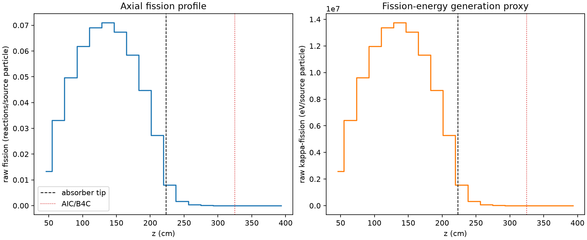
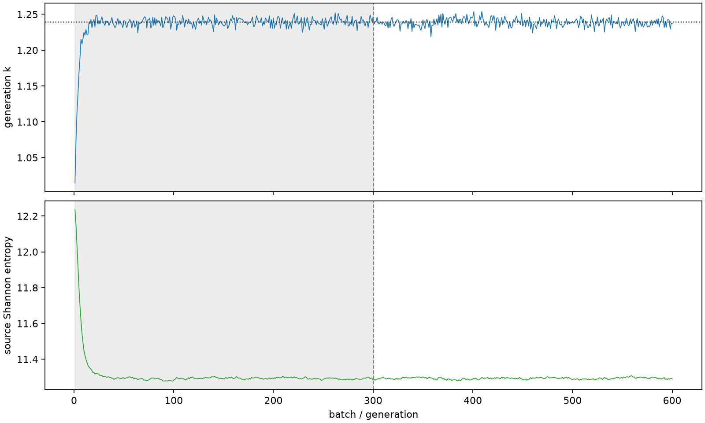

| field | value |
|---|---|
| experiment | V2-STAGE_128_OGRENCI_02-0011 |
| k | 1.2389639961176973 |
| MC standard error | 0.0001842366277304576 |
| seconds | 948.5345954689983 |
| acceptance | not_assessed |
| convergence | review_required |
Completed is output integrity only; physical and statistical review required. Zero tallies do not prove zero production or zero uncertainty.
| diagnostic | value |
|---|---|
| geometric fuel voxels | 5280 |
| zero fission tally voxels | 613 |
| low signal fuel voxels | 1595 |
| low signal fission share | 6.468290724097331e-05 |
| low signal kappa share | 6.470709569363252e-05 |
| important fission share | 0.9500182732677329 |
| previous filter included | 3685 |
| duration estimate s | 1562.5173488400023 |
| actual minus estimate s | -613.982753371004 |
| fission relative MC error | statistics |
|---|---|
| all_geometric_fuel | {"voxels": 5280, "positive_mean_voxels": 4667, "zero_mean_voxels": 613, "undefined_relative_error_voxels": 613, "median": 0.011200074454055365, "p95": 0.8857490478704522, "maximum": 1.0000000000000002} |
| low_signal | {"voxels": 1595, "positive_mean_voxels": 982, "zero_mean_voxels": 613, "undefined_relative_error_voxels": 613, "median": 0.6177774577963275, "p95": 1.0, "maximum": 1.0000000000000002} |
| important_95pct | {"voxels": 2358, "positive_mean_voxels": 2358, "zero_mean_voxels": 0, "undefined_relative_error_voxels": 0, "median": 0.0073339515753862985, "p95": 0.010549802290666594, "maximum": 0.012393359858228795} |
| outside_previous_filter | {"voxels": 1595, "positive_mean_voxels": 982, "zero_mean_voxels": 613, "undefined_relative_error_voxels": 613, "median": 0.6177774577963275, "p95": 1.0, "maximum": 1.0000000000000002} |
| kappa_fission relative MC error | statistics |
|---|---|
| all_geometric_fuel | {"voxels": 5280, "positive_mean_voxels": 4667, "zero_mean_voxels": 613, "undefined_relative_error_voxels": 613, "median": 0.011187235831191867, "p95": 0.8853265424569634, "maximum": 1.0000000000000002} |
| low_signal | {"voxels": 1595, "positive_mean_voxels": 982, "zero_mean_voxels": 613, "undefined_relative_error_voxels": 613, "median": 0.6173747619156359, "p95": 1.0, "maximum": 1.0000000000000002} |
| important_95pct | {"voxels": 2358, "positive_mean_voxels": 2358, "zero_mean_voxels": 0, "undefined_relative_error_voxels": 0, "median": 0.007326040966660662, "p95": 0.010539308725216892, "maximum": 0.012379919169665651} |
| outside_previous_filter | {"voxels": 1595, "positive_mean_voxels": 982, "zero_mean_voxels": 613, "undefined_relative_error_voxels": 613, "median": 0.6173747619156359, "p95": 1.0, "maximum": 1.0000000000000002} |
| axial bin | fission share | kappa-fission share |
|---|---|---|
| 1 | 0.026193334402427992 | 0.026194399900020468 |
| 2 | 0.06542129530378384 | 0.06542099108323365 |
| 3 | 0.09811105140592673 | 0.09811064529993946 |
| 4 | 0.12216926328380623 | 0.12216833047006931 |
| 5 | 0.1364087467630116 | 0.13640782284074948 |
| 6 | 0.1402461837909288 | 0.14024487590451165 |
| 7 | 0.13307132911225747 | 0.13307048369959323 |
| 8 | 0.11554168270635859 | 0.11554101898612908 |
| 9 | 0.08851757240625621 | 0.0885173003929766 |
| 10 | 0.05398244358203661 | 0.05398248998494523 |
| 11 | 0.015873289881404178 | 0.015876374313360586 |
| 12 | 0.003396951182988818 | 0.003398070287983913 |
| 13 | 0.0008137896324230293 | 0.000814047874200149 |
| 14 | 0.00019662332762720202 | 0.00019668331424377368 |
| 15 | 4.307377028091031e-05 | 4.3090868940956694e-05 |
| 16 | 1.061890341559308e-05 | 1.0622002309574528e-05 |
| 17 | 2.1420221897866754e-06 | 2.143536872134573e-06 |
| 18 | 5.428709405152967e-07 | 5.436115317825147e-07 |
| 19 | 6.565193592853045e-08 | 6.56283889318862e-08 |
| 20 | 0.0 | 0.0 |
Histories include the inactive-to-active transition at batch 300. kappa-fission approximates fission energy production, not total heat deposition.

